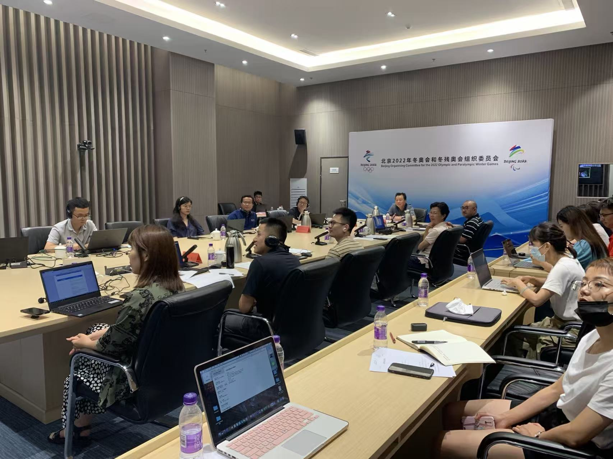
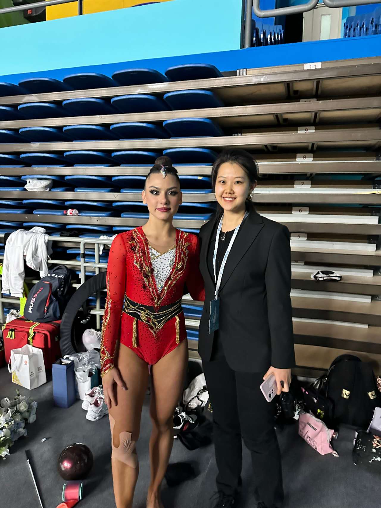
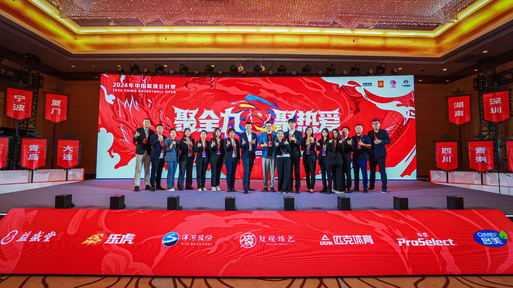
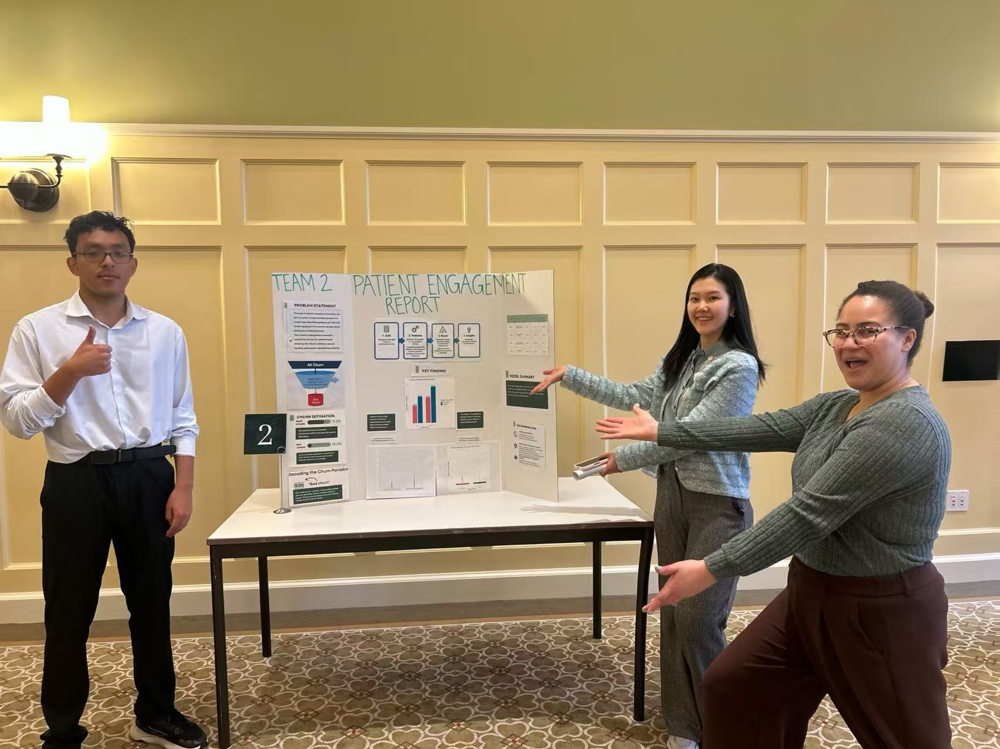
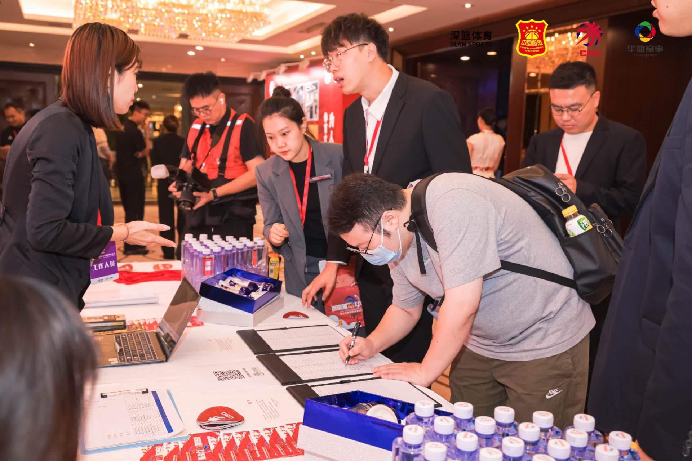
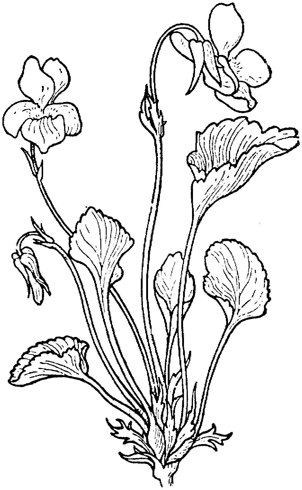

Analytics isn't about finding answers.
It's about helping organizations make better decisions.




My first lesson in analytics didn't come from Python, SQL, or a statistics textbook. It came from trying to keep a live sporting event from falling apart.

Before graduate school, I worked in sports operations and event management. On paper, my job was coordinating competitions. In reality, it meant aligning athletes, officials, volunteers, medical teams, sponsors, venue operators, governing bodies, and organizers — each with different priorities, incentives, and definitions of success.
What I learned very quickly was that success rarely depended on having more information. It depended on getting the right people aligned around the right information.

I'm currently open to full-time roles in business analytics, strategy, and decision science — with particular interest in healthcare, retail, consulting, and technology sectors.